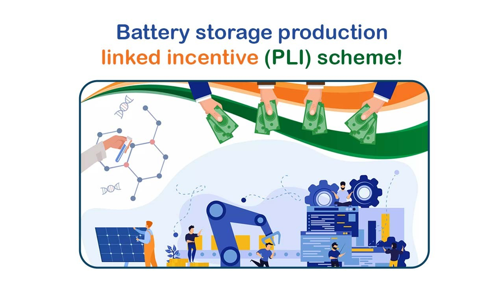
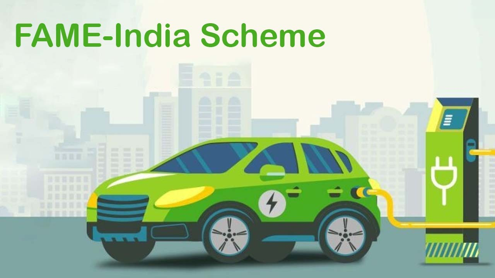

As the need for electricity grows, maintaining a consistent power supply is crucial for businesses and industries. The energy demand is predicted to rise as the economy continues to improve, possibly resulting in conflicts over the availability of power in different areas. Given these difficulties, the creation of commercial and industrial energy storage systems has become a key factor in supplying a steady stream of electricity. The main drivers of the expansion of industrial and commercial energy storage are examined in this article. These causes include the necessity for a steady power supply, the widening gap between peak and valley electricity rates, supporting regulations, and the declining cost of lithium carbonate. We can obtain insight into the potential and opportunities in industrial and commercial energy storage in the future by comprehending these motivating reasons.
Demand for Stable Power Supply
The ongoing condition of power shortages in India has led to a rise in demand for industrial and commercial energy storage. In 2020–21, India experienced a peak power shortfall of 0.5 percent and an energy shortage of 0.6 percent, citing a report released by the Central Electricity Authority (CEA). Due to the rising demand for power and the growing frequency of extreme weather events like heat waves and cyclones, it is anticipated that this shortfall will persist in the upcoming years. Commercial and industrial energy storage systems can be quite helpful in these circumstances to maintain a steady power supply and prevent production losses.
Recognizing the value of energy storage, the Indian government has launched a number of initiatives to encourage its use, such as the Made in India program and the National Energy Storage Mission (NESM). Consequently, it is anticipated that the Indian energy storage market will expand quickly in the upcoming years, with commercial and industrial uses serving as major growth catalysts.
Role of Energy Storage
Energy storage is essential to maintaining a steady power supply for business and industrial use. Peak demand times, intermittent renewable energy sources, and power shortages are the problems that energy storage devices can deal with. Energy storage devices can lessen the burden on the grid and prevent blackouts and brownouts by storing excess energy during off-peak hours and releasing it during peak demand periods. For commercial and industrial customers who depend significantly on a steady power supply to run their businesses, this is especially crucial. By storing excess energy for use during times of low generation, energy storage systems can also aid in the integration of renewable energy sources like solar and wind power into the grid. This may encourage the use of greener energy sources and lessen dependency on fossil fuels. All things considered, energy storage plays a critical role in guaranteeing a steady power supply for commercial and industrial users, helping to preserve productivity and prevent expensive downtime brought on by power outages.
Increasing Price Difference between Peak and Valley Electricity Rates
The need for commercial and industrial energy storage is largely driven by the widening price gap between peak and valley electricity rates. Peak and valley electricity rates describe the higher costs associated with high demand for electricity (peak) and lower costs associated with low demand for electricity (valley). The cost differential between peak and valley electricity rates has been increasing in recent years, which has made energy storage more advantageous. China and India are just two of the global locations where this price disparity has widened. The financial attractiveness of energy storage increases when one considers that the viability of the technology is 0.7 yuan/kWh.
By storing excess energy during off-peak hours and releasing it during peak hours, energy storage systems can profit from this price differential and create arbitrage opportunities. Many regions have also implemented time-sharing electricity pricing policies, which incentivize commercial and industrial users to further modify their patterns of electricity consumption. In general, the growing disparity in cost between peak and valley electricity rates is a major factor propelling the uptake of commercial and industrial energy storage systems, as they provide economic advantages and aid in grid stabilization during spikes in demand.
Time-Sharing Electricity Pricing
In order to further encourage the adoption of energy storage, time-sharing electricity pricing policies have also been put into place. By providing varying rates throughout the day, these policies encourage users to modify their patterns of electricity consumption. Commercial and industrial users can maximize their savings and benefit from the financial attractiveness of energy storage by scheduling their energy usage during less expensive times.
All things considered, these encouraging policies acknowledge the potential of industrial and commercial energy storage. Their goals are to establish an economic threshold for viability, encourage the use of time-sharing pricing to optimize energy consumption and unlock the benefits of peak and valley electricity rate differentials. These policies help create a more affordable and sustainable energy environment for India's commercial and industrial sectors by encouraging the use of energy storage.
Supportive Policies
To promote its adoption and optimize its advantages, pro-commercial and pro-industrial energy storage policies have been introduced in India. A policy that addresses peak and valley electricity rates, or the difference in electricity prices during peak and valley periods of high and low demand, is one example of this kind. Energy storage is greatly impacted by the widening price gap between peak and valley rates. It establishes a financial barrier for the viability of energy storage because storage deployment becomes financially attractive at a specific price difference, usually 0.7 rupees per kilowatt-hour. These helpful policies take advantage of the price differential's arbitrage opportunities.
Electricity can be stored by commercial and industrial users during times of low demand, when rates are lower, and released during times of high demand when rates are higher. They are able to minimize their overall electricity expenses and maximize their energy costs as a result.
Some of the policy examples are given below:
Energy Storage Obligation (ESO): Energy Storage Systems (ESS) count toward the policy's requirement that utilities obtain a specific proportion of their energy from renewable energy sources (RES). Currently set at one percent of total energy consumption, the ESO is expected to rise to four percent by 2029–2030.

Battery storage production linked incentive (PLI) scheme: Manufacturers of lithium-ion batteries in India receive financial support under the PLI scheme for battery storage. It is anticipated that the scheme will bring in over INR 18,000 crore in investments and generate over 50,000 jobs in the industry.

FAME-India Scheme: Financial incentives are offered by the FAME-India scheme to encourage the purchase of electric vehicles (EVs) and associated infrastructure. Incentives are also offered by the program to install ESS in addition to EVs.
Wall-to-wall Power Sales:
Tariff reforms: To encourage ESS providers to sell electricity to the grid, the CERC has implemented a number of tariff reforms. For instance, CERC has given ESS providers access to a new tariff category and the ability to trade in both the day-ahead and real-time electricity markets.
The mission of National Energy Storage (NESM): A government program called NESM seeks to hasten the introduction of ESS in India. A variety of monetary and non-monetary incentives are offered by the NESM to encourage the creation and application of ESS.
Overall, the expansion of industrial and commercial energy storage has been fueled by a mix of factors including stable power supply and demand, widening price disparities in electricity rates, supportive regulations, and declining costs for battery materials. In 2023, this industry is predicted to grow significantly as it becomes a crucial part of the energy landscape.